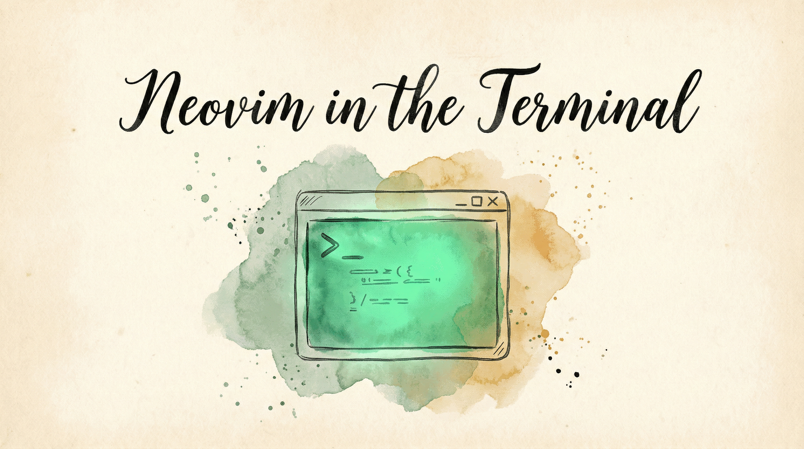

You live in the terminal. Neovim is your editor. But when you switch to other macOS apps, your muscle memory goes silent — no hjkl, no w/b, no gd. KeyPath bridges the gap: hold the Leader key and your vim instincts work everywhere, while the HUD shows a quick-reference card for the Neovim commands you use most.
Enable the Neovim Terminal collection in the Rules tab and you get two things:
Leader-layer shortcuts — hold the Leader key and use h j k l, w b e, 0 $, /, y, p, and more in any macOS app. These translate vim motions into native macOS cursor movements and editing commands.
Quick-reference HUD — the same Leader hold pops up a categorized reference card covering core vim and Neovim-specific features (LSP, Telescope, buffers, terminal mode). Glance at it when you forget a binding; dismiss by releasing Leader.
The collection shares the navigation layer with Vim and KindaVim — only one of the three should be active at a time. KeyPath handles conflict detection automatically.
When you hold the Leader key, the HUD appears with two columns:
Left column — Core Vim:
h j k l, w b e, 0 $, gg G, f t, { }d, c, y, > <, =iw aw, ip ap, i" a"/ ?, n N, * #Right column — Neovim-specific:
:bn :bp :bd, gt gT, Ctrl-^gd, gr, K, <leader>rn, <leader>ca<leader>ff fg fb fh:terminal, Ctrl-\ Ctrl-n, iThe reference content is static — no mode tracking or app detection needed. It shows the same card every time, designed to be scanned in under a second.
Key names. Neovim Terminal names its keys in Vim terms by default (yank, put, gg, word, back). Under Key names on the pack's page, switch to Plain (Copy, Paste, Top) if you prefer. The choice applies to the overlay and the Shortcut List.
These shortcuts work in any macOS app while holding the Leader key:
| Key | Action |
|---|---|
h j k l |
Arrow keys (left/down/up/right) |
w |
Word forward (Option-Right) |
b |
Word back (Option-Left) |
e |
End of word (Option-Right) |
0 |
Line start (Cmd-Left) |
$ |
Line end (Cmd-Right) |
gg / G |
Document top/bottom |
/ |
Find (Cmd-F) |
n / N |
Next/previous match |
y |
Yank / copy (Cmd-C) |
p |
Put / paste (Cmd-V) |
u |
Undo (Cmd-Z) |
r |
Redo (Cmd-Shift-Z) |
d |
Delete word (Option-Backspace) |
x |
Forward delete |
o / O |
Open line below/above |